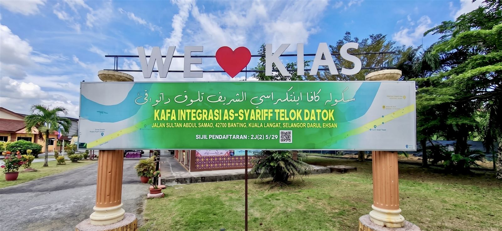
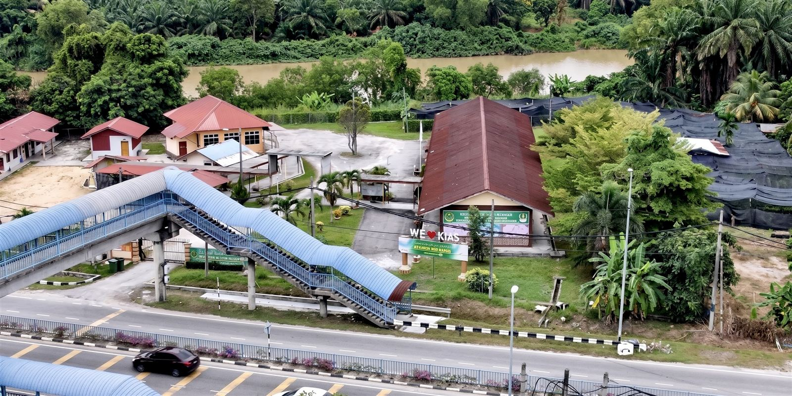
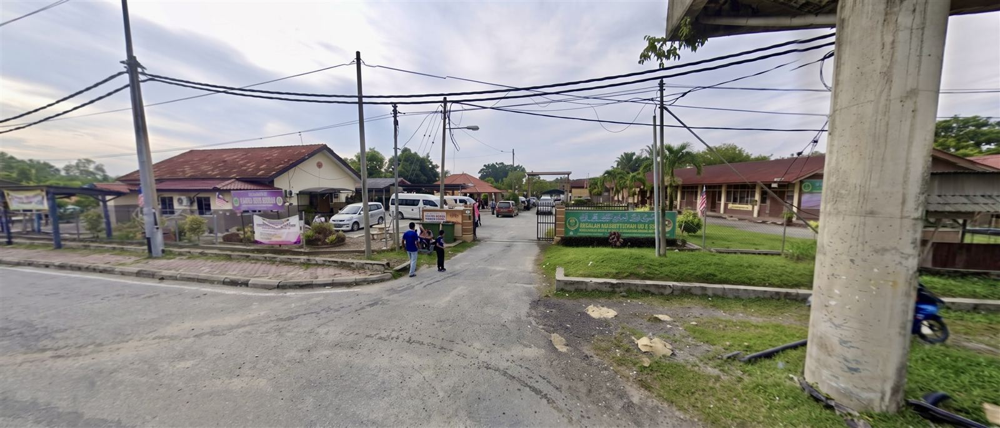

Pendaftaran
Pendaftaran murid & waris
Syarat kemasukan Tahun 1 hingga Tahun 6, dokumen yang diperlukan dan waktu operasi.
Panduan pendaftaranLaman web rasmi · Sekolah KAFA Integrasi
علمو سينر هيدوڤ
Ilmu Sinar Hidup
Sekolah KAFA di bawah JAIS yang beroperasi pada sesi petang di Telok Datok, Banting. Pembelajaran menekankan Al-Quran, fardu ain, bahasa Arab, Jawi dan akhlak mengikut kurikulum KAFA.
KAFAI As-Syariff
Telok Datok,
42700 Banting, Selangor
03-3187 8498 (pejabat)
013-665 6964 (pentadbiran)
Petang
Sekitar 12.30 tengah hari – 5.30 petang
Papan tanda, kawasan sekolah dan pintu masuk KAFA Integrasi As-Syariff Telok Datok, Banting.



Sorotan program
Majlis khatam bacaan Al-Quran murid, selepas raptai pada 16 November 2026.
Majlis Khatam merupakan program rasmi dalam kalendar sekolah. Butiran masa, tempat dan kehadiran belum disahkan dalam data awam.

1 / 1
Poster grafik Majlis Khatam 2026 - KAFAI As-Syariff Telok Datok.
Maklumat utama sekolah untuk murid, waris dan masyarakat setempat dalam satu tempat.
Syarat kemasukan Tahun 1 hingga Tahun 6, dokumen yang diperlukan dan waktu operasi.
Panduan pendaftaranLatar sekolah, motto, kod JAKIM, status pendaftaran dan statistik agregat.
Buka profilSenarai mata pelajaran KAFA, enam tahap penguasaan, UPKK dan pentaksiran.
Lihat kurikulumGuru Besar, JPK, guru, guru ganti dan rekod AJK terdahulu 2012–2014.
Kenali kepimpinanMajlis, mesyuarat, kursus, peperiksaan dan aktiviti mengikut tarikh.
Semua programDua talian telefon, dua e-mel, WhatsApp, peta dan borang pertanyaan waris.
Hubungi sekolahProgram yang telah disahkan dan belum berlalu, mengikut kalendar sekolah.
Maklumat masa dan dewan akan dimaklumkan menerusi saluran rasmi Linktree dan Facebook sekolah.
Statistik agregat daripada rekod sekolah. Tiada maklumat peringkat murid disiarkan.
Pecahan murid berdaftar: 98 lelaki dan 83 perempuan. Angka enrolmen kelas berjumlah 181; papan catatan harian mencatat 180. Tiada data kehadiran individu disiarkan.
Pautan rasmi untuk pengesahan maklumat sekolah dan waktu solat. Pautan membuka laman luar dalam tab baharu.
Kod sekolah JAKIM BYT1005 disemak melalui profil SIMPENI. Waktu solat dipaparkan daripada e-Solat JAKIM (zon SGR03: Klang dan Kuala Langat) dengan jadual sandaran setempat.
Laman web ini ialah laman rasmi KAFA Integrasi As-Syariff Telok Datok (BYT1005). Maklumat peribadi yang diberikan kepada sekolah dikendalikan mengikut Akta Perlindungan Data Peribadi 2010 (PDPA).
Data murid seperti nama, nombor kad pengenalan, markah, kehadiran dan rekod disiplin tidak disimpan atau disiarkan di laman awam ini. Hanya statistik agregat dipaparkan.
Pembetulan nama, jawatan atau maklumat hubungan boleh dimaklumkan kepada pejabat sekolah melalui halaman Hubungi.